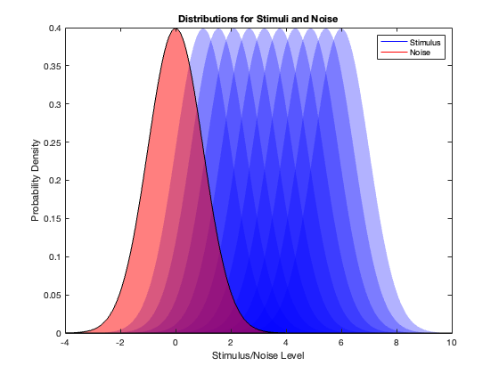
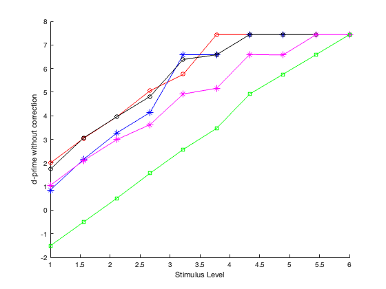
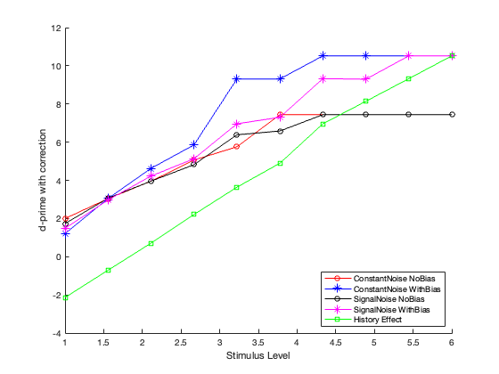
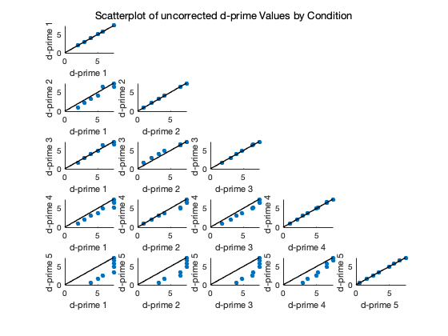
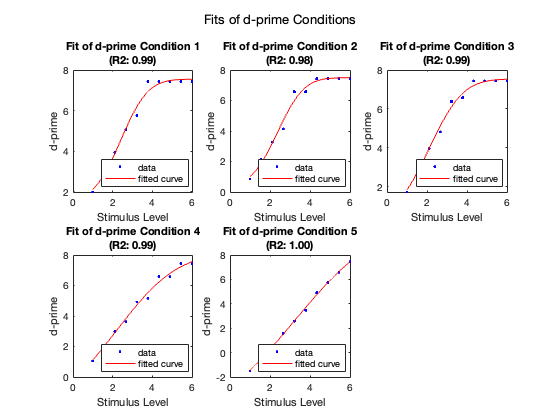

Contents
clear; close all; clc;
The experiment here is a 2AFC method of constant stimuli. There are 10 stimuli levels and a noise level which is 0. There are different conditions that are being simulated: 1. Constant Noise with No Bias 2. Constant Noise with Interval Bias (here, its simulated as right bias) 3. Signal-dependent Noise with No Bias 4. Signal-dependent Noise with Interval Bias 5. History effects (simulated for constant noise with no bias), but can be easily interpolated to other conditions What we see that dprime with interval bias is lower than dprime constant noise as would be expected. We can also see that applying correction to this dprime, makes it match the dprime without interval bias for low stimulus levels. Additionally, dprime with signal-dependent noise with interval bias is also lower than corresponding with constant noise which can also be fixed using the correction factor. Crucial thing is that the signal-dependent noise impacts the dprime as a function of stimulus level as would be expected. I have also attempted modeling history-dependent effects. Basically, I am biasing the responses based on whether the previous 5 trials therby creating a sort of sequential bias. Note that the history effect looks awfully like the interval-bias in dprime uncorrected plot. However, it cannot be fixed by correction for bias as would be expected. Addtionally, dprimes are compared as pairwise plots which essentially tell the same story and model-fitting to dprime is done using cumulative normal psychometric function.
Initialization
nStim = 10; % Number of stimuli nTrials = 1e3; totalTrials = nStim * nTrials; stimuli = linspace(1, 6, nStim); % Stimulus - levels selected noiseLvl = 0; % Noise level constNoise = 0.6; % Constant noise intervalBias = 0.5; % Bias value, get interesting plots when bias = 1 and -1 so this is correct! % Plot stimulus and noise distributions % Visualziing stimuli and noise ditributions to make sure the task is hard % enough but not too hard figure(); x = linspace(-4, 10, 1000); for i = 1:nStim y = normpdf(x, stimuli(i), 1); fill(x, y, 'b', 'FaceAlpha', 0.3, 'EdgeColor', 'none'); hold on; end fill(x, normpdf(x, noiseLvl, 1), 'r', 'FaceAlpha', 0.5); hStimulus = plot(NaN, NaN, 'b', 'DisplayName', 'Stimulus'); hNoise = plot(NaN, NaN, 'r', 'DisplayName', 'Noise'); xlabel('Stimulus/Noise Level'); ylabel('Probability Density'); title('Distributions for Stimuli and Noise'); legend([hStimulus, hNoise], 'Location', 'northeast'); % Simulate side where the signal is on each trial uniformly % Seq is the sequence of stimuli levels, chosen randomly. One step close to % adding history effects :/ side = randsample([-1, 1], totalTrials, true); seq = repmat(stimuli, 1, nTrials); seq = seq(randperm(length(seq))); dP1 = compute_dprime(stimuli, seq, side, 'constant', 0); dP2 = compute_dprime(stimuli, seq, side, 'constant', intervalBias); dP3 = compute_dprime(stimuli, seq, side, 'signal-dependent', 0); dP4 = compute_dprime(stimuli, seq, side, 'signal-dependent', intervalBias); dP5 = compute_dprime(stimuli, seq, side, 'constant', 0, 1); figure(); hold on; plot(stimuli, dP1, 'ro-', 'DisplayName', 'ConstantNoise NoBias') plot(stimuli, dP2, 'b*-', 'DisplayName', 'ConstantNoise WithBias') plot(stimuli, dP3, 'ko-', 'DisplayName', 'SignalNoise NoBias') plot(stimuli, dP4, 'm*-', 'DisplayName', 'SignalNoise WithBias') plot(stimuli, dP5, 'gs-', 'DisplayName', 'History Effect') xlabel('Stimulus Level') ylabel('d-prime without correction') % dprime corrected for bias conditions: dprime corrected = dprime * sqrt(2) % for interval bias figure(); hold on; plot(stimuli, dP1, 'ro-', 'DisplayName', 'ConstantNoise NoBias') plot(stimuli, dP2*sqrt(2), 'b*-', 'DisplayName', 'ConstantNoise WithBias') plot(stimuli, dP3, 'ko-', 'DisplayName', 'SignalNoise NoBias') plot(stimuli, dP4*sqrt(2), 'm*-', 'DisplayName', 'SignalNoise WithBias') plot(stimuli, dP5*sqrt(2), 'gs-', 'DisplayName', 'History Effect') xlabel('Stimulus Level') ylabel('d-prime with correction') legend('Location', 'southeast') % Create a matrix to hold d-prime values for easy access dPMatrix = {dP1, dP2, dP3, dP4, dP5}; labels = {'Constant Noise No Bias', 'Constant Noise Interval Bias', ... 'Signal-dependent Noise No Bias', 'Signal-dependent Noise Interval Bias', ... 'History Effect'}; figure(); for i = 1:length(dPMatrix) for j = 1:length(dPMatrix) if j <= i subplot(length(dPMatrix), length(dPMatrix), (i-1)*length(dPMatrix)+j); scatter(dPMatrix{j}, dPMatrix{i}, 'filled'); hold on; maxVal = max([dPMatrix{j}; dPMatrix{i}]); plot([0 maxVal], [0 maxVal], 'k-', 'LineWidth', 1.4); xlabel(sprintf('d-prime %d ', j)); ylabel(sprintf('d-prime %d ', i)); xlim([0 maxVal]); ylim([0 maxVal]); hold off; end end end sgtitle('Scatterplot of uncorrected d-prime Values by Condition'); % Fitting the cumulative normal psychometric functions to dprime fitResults = cell(1, length(dPMatrix)); gaussEqn = 'a*normcdf(x, b, c) + d'; startPoints = [max(cellfun(@max, dPMatrix)), median(stimuli), 1, 0]; figure(); for i = 1:length(dPMatrix) [fitResult, gof] = fit(stimuli', dPMatrix{i}, gaussEqn, 'Start', startPoints); fitResults{i} = fitResult; subplot(2, 3, i); plot(fitResult, stimuli, dPMatrix{i}); title(sprintf('Fit of d-prime Condition %d\n(R2: %0.2f)', i, gof.rsquare)); xlabel('Stimulus Level'); ylabel('d-prime'); legend('Location', 'southeast') end sgtitle('Fits of d-prime Conditions');    